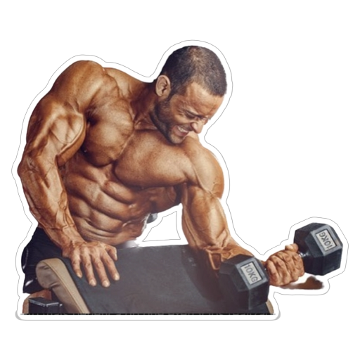

Primeiro vamos saber um pouco mais sobre treinos e dietas
A musculação é uma atividade fisíca que estimula todo o sistema muscular. É um conjunto de exercícios baseados na repetição de cargas progressivas. Os movimentos são feitos com equipamentos específicos, como maquinas, pesos livres,borrachas, cabos e acessórios diversos.
Os benefícios da musculção é que aumenta o volume das fibras musculares, proporcionando mais força. O treino contribui, inclusive, para a manutenção da mobilidade. Com a orientação adequada, ele previne lesões, melhora a postura e o condicionamento físico
Há quem ame e quem deteste musculação, porém com o passar dos anos nosso corpo passa por uma perda de fibra muscular (processo de sarcopenia) e de massa óssea (processo de osteopenia) e a prática da musculação pode desacelerar esse processo. Ao “puxar ferro” ocorre o processo de hipertrofia, que aumenta o número de fibras musculares. “E alguns exercícios de musculação quando há compressão nos ósseos no sentido longitudinal do osso, a gente acaba estimulando a produção de massa óssea
Ganho de massa muscular
Para ganhar massa muscular, é importante fazer atividade física de forma regular e seguindo as orientações do treinador, além de seguir uma alimentação adequada ao objetivo, dando preferência aos alimentos ricos em proteína.
É importante também dar um tempo para o músculo descansar para que possa crescer, isso porque durante os exercícios as fibras musculares se lesionam e enviam um sinal ao corpo que indica a necessidade da recuperação muscular, e é durante a recuperação que se ganha massa muscular.
A alimentação também é parte fundamental no processo de ganho de massa muscular, pois fornece os os nutrientes necessários para que o diâmetro das fibras musculares possa aumentar, garantido a hipertrofia.
Dicas para ganhar massa muscular
- • Treinar de 3 a 5 vezes na semana;
- • Ter uma alimentação rica em proteinas;
- • Consumir gorduras e carboidratos antes do treino;
- • Trocar de treino de forma regular;
- • Treinos de forma regular;
- • O descanço muscular é fundamental para a hipertrofia;
- • Dormir bem;
Perda de peso
Se a perda de peso é o seu objetivo, é fundamental incorporar a musculação em seus treinos, pois a longo prazo, a construção de músculos (massa magra) definitivamente funcionará a favor de seus objetivos de perda e manutenção de peso. Também é importante lembrar que o exercício é apenas parte da equação. Você precisa criar um déficit calórico, ou seja, queimar mais calorias do que consome, o que exige não apenas malhar, mas também estar ciente do que está comendo.
Uma das maiores vontades de quem começa a praticar atividades físicas é saber como perder peso na academia, com qualidade e rapidez. No entanto, mesmo seguindo o treino à risca, muitas pessoas ainda encontram dificuldade em atingir o objetivo. Isso pode acontecer por diversos motivos, incluindo questões pessoais (como por exemplo, os hormônios ou próprio metabolismo do corpo). Há, inclusive, a probabilidade de sua rotina de treino não estar adequada ao seu objetivo (e isso é mais comum do que se imagina). Lembrando que perder peso na academia é deve ser uma consequência gradual, pois dessa forma é possível emagrecer com saúde e evitar flacidez e estrias no corpo. E mais importante ainda é ter a consciência de que muitas vezes você perde gordura e até começa a ver a diferença no corpo, mas pode permanecer com um peso estável, afinal, ao se exercitar, você está estimulando os músculos e ganhando massa muscular, também conhecida como “massa magra“.
Varie os exercícios para perder peso na academia O primeiro ponto para perder peso na academia é variar os exercícios. Isso faz com que o corpo seja trabalhado inteiramente e de formas diferentes. Assim também é possível unir a perda de peso com a definição muscular. Intercale exercícios aeróbicos com musculação ou outra atividade que estimule a força. Os exercícios de cárdio também são essenciais. Portanto, se você quer emagrecer de forma saúdavel, tente colocar na sua rotina alguns desses exercícios:
- • Corrida;
- • Bicicleta;
- • Corda;
- • Lutas
- • Dança